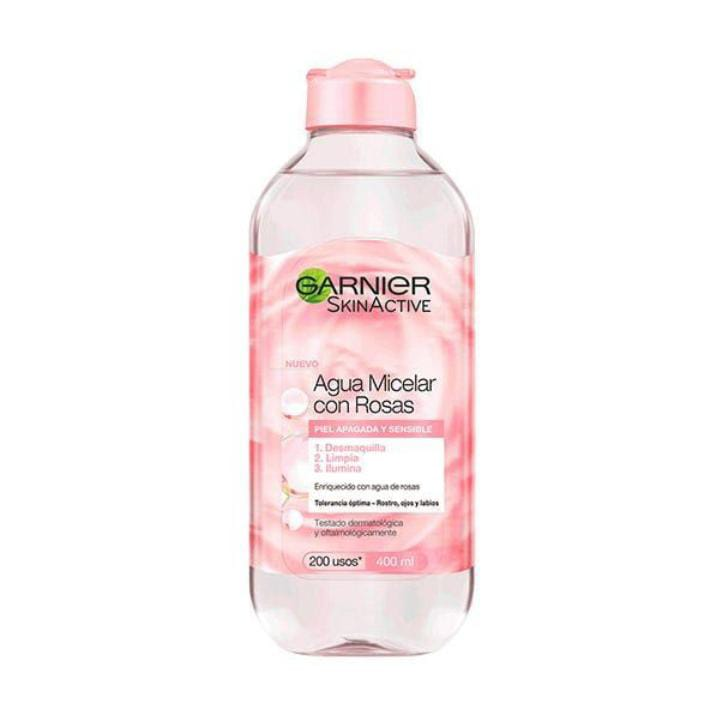

GARNIER SKIN
Agua Micelar Con Agua De Rosas | 400ML
Agua Micelar con Agua de Rosas

Agua Micelar con Agua de Rosas
Agua Micelar con Agua de Rosas, desmaquilla, limpia y realza la luminosidad del rostro para una piel apagada y sensible.
Agua Micelar con Agua de Rosas, es una forma fácil y agradable de retirar el maquillaje, limpiar y realzar la luminosidad del rostro en un solo gesto y sin aclarar. Una irresistible agua perfumada y enriquecida con agua de rosa iluminadora capaz de realzar la luminosidad de las pieles apagadas y sensibles. Sus micelas capturan el maquillaje e impurezas como un imán.
Beneficios
*Desmaquilla
*Limpia
*Ilumina
*Hidrata
*Tonifica
¿Cómo aplicarlo?
Paso " 1 "

Humedece un algodón de Agua Micelar con Agua de Rosas y pasa por el rostro para eliminar las impurezas y el maquillaje.
Paso " 2 "

Por la mañana para eliminar las células muertas y dejar la piel sin impurezas.
Paso " 3 "

Y al final del día para desmaquillar el rostro y dejarlo limpio sin impurezas.
Sérum de Ojos Revitalift Ácido Hialurónico de L'Oréal Paris
Si tenés la piel opaca, cansada, apagada, la nueva Agua Micelar de Rosas es para vos.Apta para todo tipo de piel incluso las sensibles, formulada con AGUA DE ROSAS, ingrediente conocido por iluminar, calmar, hidratar y devolverle vida a tu rostro sin dejar sensación de tirantez.Para limpiar tu piel todos los días, por la mañana y por la noche, gracias al poder de las micelas que atrapan suciedad e impurezas como un imán (¡además de maquillaje!).
Beauty Tips
Aplicar por la mañanas y en las noches.
Ingredientes
AQUA / WATER • HEXYLENE GLYCOL• GLYCERIN • ROSA DAMASCENA FLOWER WATER• PPG-26-BUTEH-26 • PEG-40 HYDROGENATED CASTOR OIL • ARGININE • POLOXAMER 184 • DISODIUM COCOAMPHODIACETATE • DISODIUM EDTA • PROPANEDIOL • CITRIC ACID • CAPRYLYL GLYCOL • CITRIC ACID • TARTARIC ACID • SALICYLIC ACID• MYRTRIMONIUM BROMIDE • LINALOOL • LIMONENE • PARFUM / FRAGRANCE.